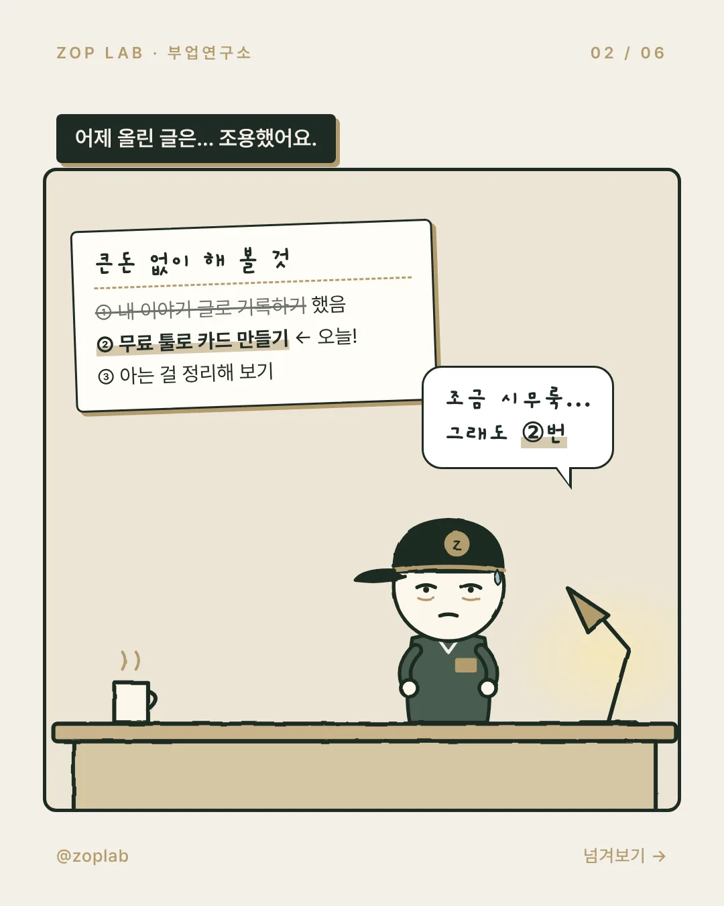
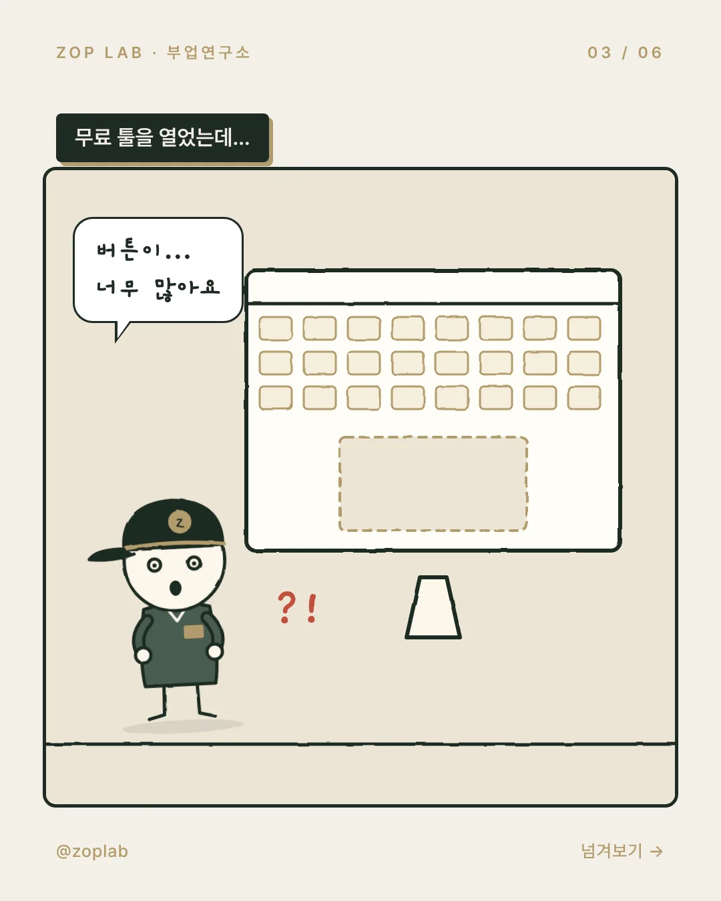
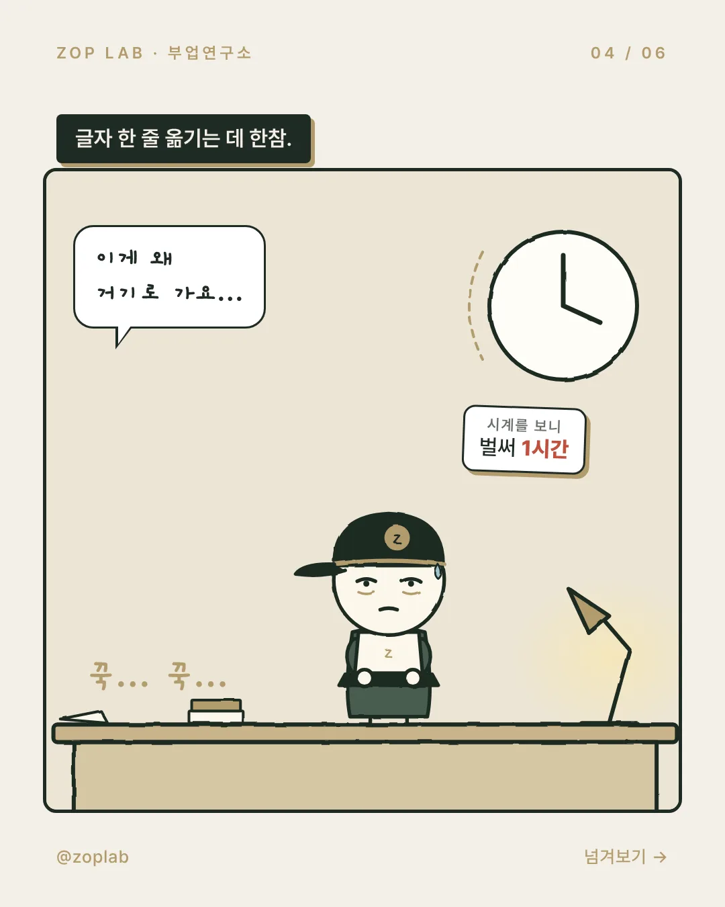
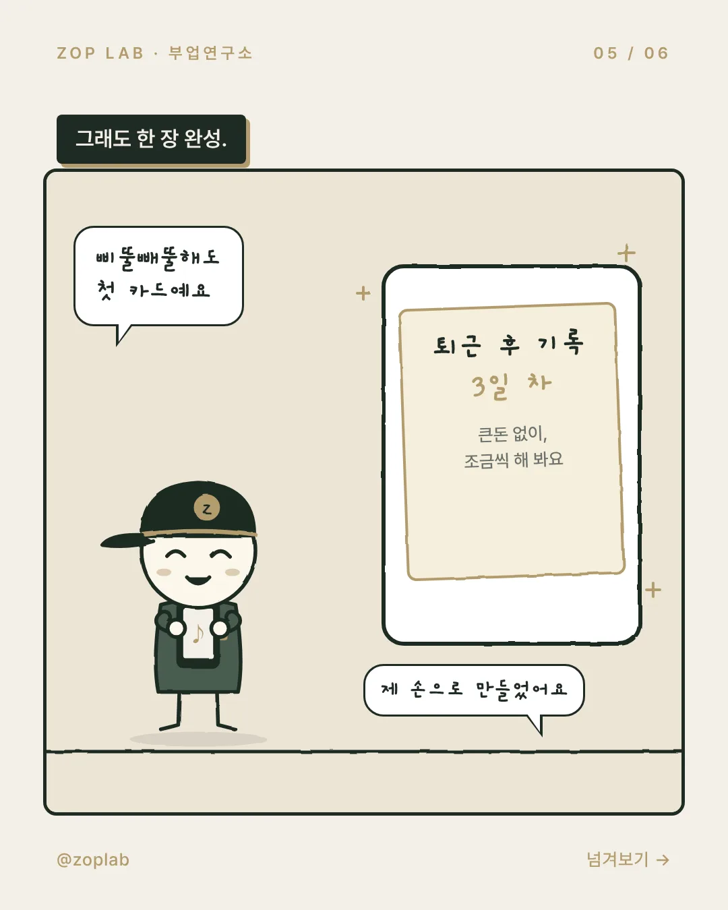
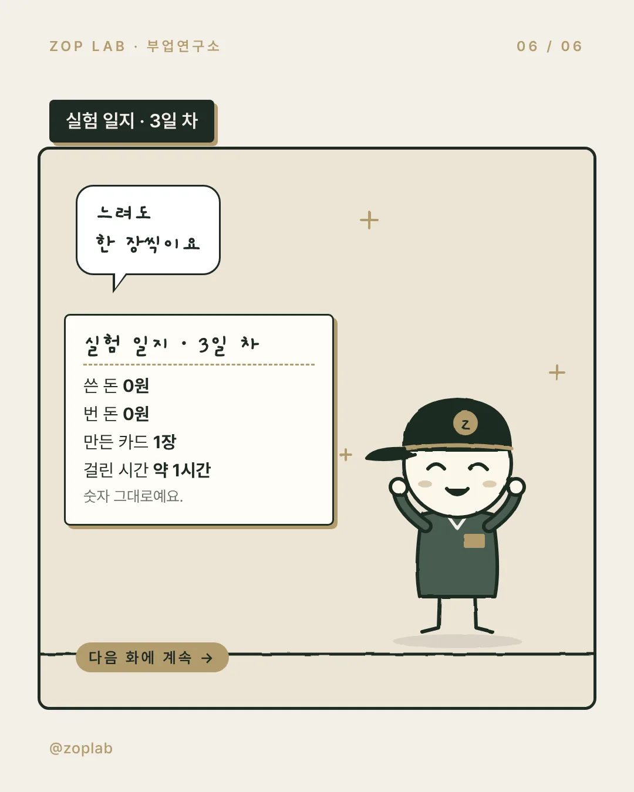

3화






어제 올린 글은 조용했어요. 조금 시무룩했지만,
오늘은 ② 무료 툴로 카드 만들기를 해 봤어요.
몸 쓰는 일 끝나고 툴을 열었더니 버튼이 너무 많더라고요.
글자 한 줄 옮기는 데 한참 걸려서, 카드 한 장에 1시간쯤 들었어요.
결과는 쓴 돈 0원, 번 돈 0원, 만든 카드 1장.
삐뚤빼뚤해도 숫자 그대로 남겨 둘게요.
다음 화에 계속돼요.